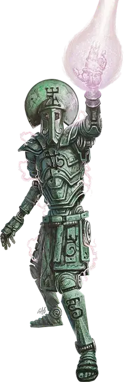

Рунический колосс
Runic Colossus
Громадный Конструкт, без мировоззрения

Класс Доспеха 20 (природный доспех)
Хиты 315 (18к20 + 126)
Скорость 60 футов
| мод | спас | ||
|---|---|---|---|
| СИЛ | 25 | +7 | +7 |
| ЛОВ | 9 | −1 | −1 |
| ТЕЛ | 24 | +7 | +7 |
| мод | спас | ||
|---|---|---|---|
| ИНТ | 3 | −4 | −4 |
| МДР | 11 | +0 | +0 |
| ХАР | 1 | −5 | −5 |
Сопротивление урону кислота, огонь, холод, электричество
Иммунитет к урону психическая энергия, яд; дробящий, колющий, рубящий от немагических атак
Иммунитет к состояниям испуг, истощение, окаменение, отравление, очарование, паралич
Чувства тёмное зрение 120 футов, пассивное Восприятие 10
Языки понимает Великаний, но не говорит
Опасность 21 (33000 опыта)
Бонус мастерства +7
Особенности
Неизменяемая форма. Колосс обладает невосприимчивостью ко всем заклинаниям и эффектам, изменяющим его форму.
Сопротивление магии. Колосс совершает с преимуществом спасброски от заклинаний и прочих магических эффектов.
Осадный монстр. Колосс наносит двойной урон объектам и сооружениям.
Действия
Мультиатака. Колосс совершает две атаки Размашистым ударом и использует Топот.
Размашистый удар. . Рукопашная атака оружием: + 14 к попаданию, досягаемость 20 футов, одна цель. Попадание: 26 (3к12 + 7) дробящего урона.
Топот. Рукопашная атака оружием: + 14 к попаданию, досягаемость 20 футов, одна цель. Попадание: 29 (4к10 + 7) дробящего урона.
Если цель - существо Огромного размера или меньше, оно должно преуспеть в спасброске Ловкости Сл 22, иначе упадёт ничком. Пока колосс снова не использует свой Топот или не переместиться, существо так же опутано. Опутанное существо или другое существо в пределах 5 футов от него может использовать действие что бы совершить проверку Силы Сл 22. В случае успеха, опутанное существо перемещается в незанятое пространство по своему выбору в пределах 5 футов от колосса и перестаёт быть опутанным.
Магический луч (перезарядка 5-6). Колосс выпускает луч наполненный магической силой из своей груди, рук или головы 150-футовой линией шириной 10 футов. Каждое существо в этой области должно совершить спасбросок Ловкости Сл 22, получая 58 (9к12) урона силовым полем в случае провала или половину этого урона в случае успеха.
Реакции
Отражение заклинаний (2/день). Дальнобойная атака заклинанием: +14 к попаданию, дистанция 120 футов, одно существо накладывающее заклинание 5-го уровня или ниже. Попадание: 26 (4к12) урона силовым полем, и цель должна преуспеть в спасброске Интеллекта Сл 15, иначе заклинание не срабатывает и не оказывает эффекта.
Описание
Согласно "Саге об Усмирителе драконов", рассказанной великанами в некоторых мирах, разрозненная группа великанов объединила свои усилия, чтобы защитить свою древнюю империю от особенно злобного дракона. Каменные и холмовые великаны высекли могучую фигуру из живого камня. Облачные и ледяные великаны собирали редкие металлы, а огненные великаны придавали им форму гибких суставов и покрытой металлом брони. Штормовые великаны начертали руны на инертной фигуре, чтобы придать ей подобие жизни. Плодом этих трудов стал вечный страж: первый рунический колосс.
Рунический колосс достигает 30 футов в высоту. Он рассматривает всех не-великанов как угрозу, и, если у него нет других приказов, он атакует таких существ, как только увидит.
Искусство создания рунического колосса утрачено современными великанами, но многие легенды предполагают, что инструкции могут быть похоронены глубоко в руинах империй древних великанов.